Calculus Made Simple ... And A New Perspective
This is an updated 🆕 version of my video - What is Calculus
Companion article
Surely everybody knows how to count money, or calculate the area of their beautiful house. And surely everybody loves sailing. That’s all the requirements to understand Calculus. a times b, can mean a few things. In the context of shopping, it’s 6 beers times 2 dollars each, that’s 12 dollars for a 6-pack of beer. In the context of elementary algebra, it’s length-times-width equals the area of a rectangle. Notice the word - area.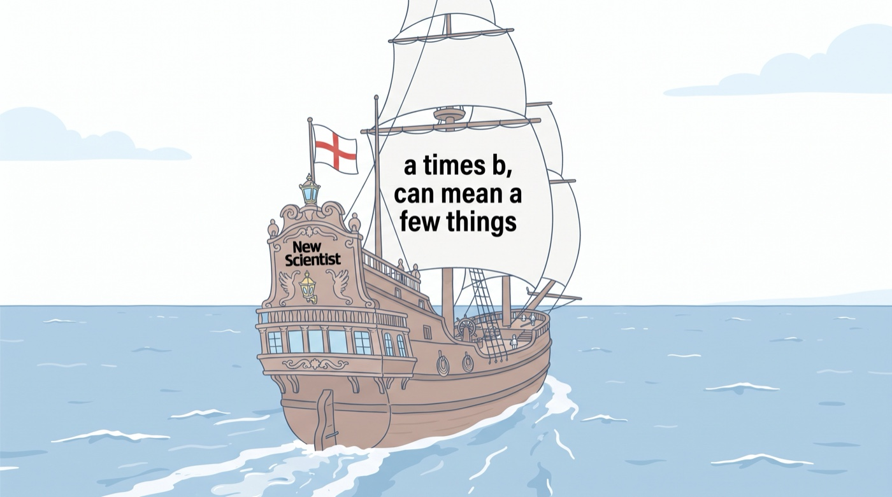
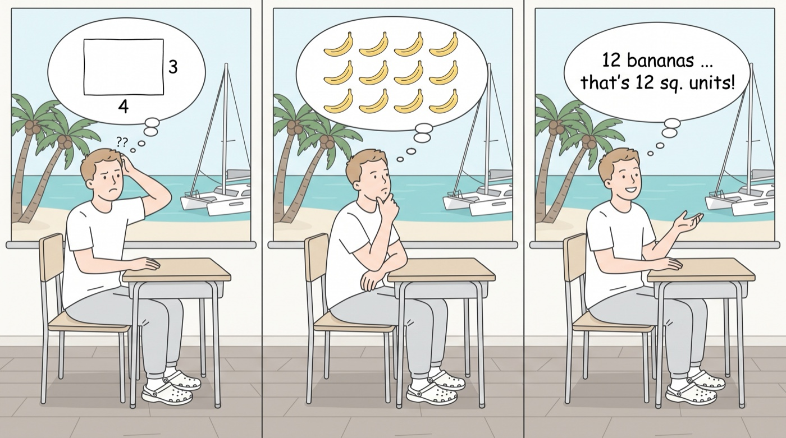
In ancient times, captains or navigators of sailing ships document the average speed on an hourly basis using hourglass. At the destination, the distance traveled during the journey is actually the area under the speed-time curve.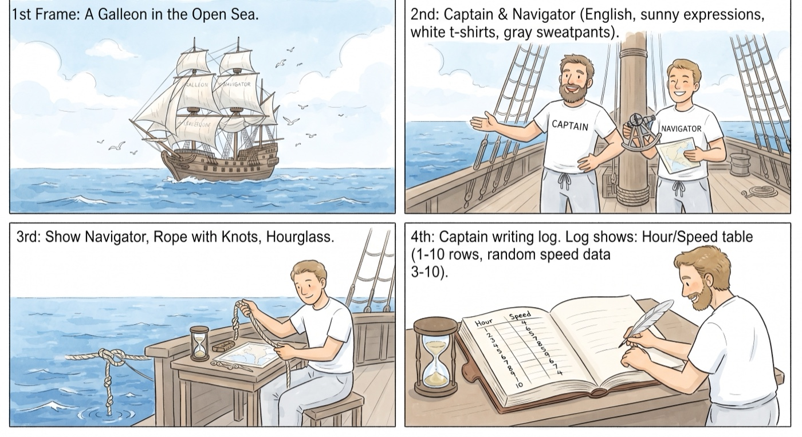
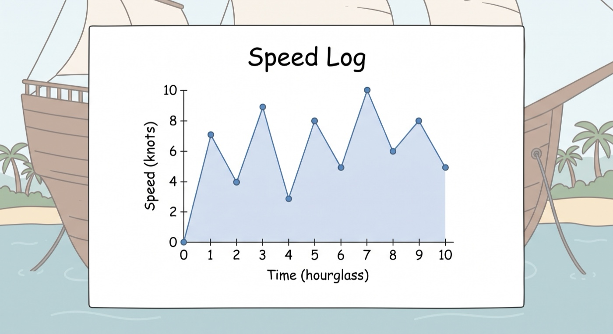
Just sum up the products of speed and time unit of every hour, into a bigger area. Note that, although the hourly knots-counted speed is accurate (in terms, of course, of knots-counted speed), and the total area is indeed the distance covered, neither the data points nor the straight lines connecting each point actually match the real-life speed-time function. We don’t really know the speed at ANY instance - counting knots or spinning-wheels! And the speed-time in nature is always a smooth curve. Newton will tell you that, as the time unit approaches infinitely small, the function will become smooth, and the area under the curve becomes the distance.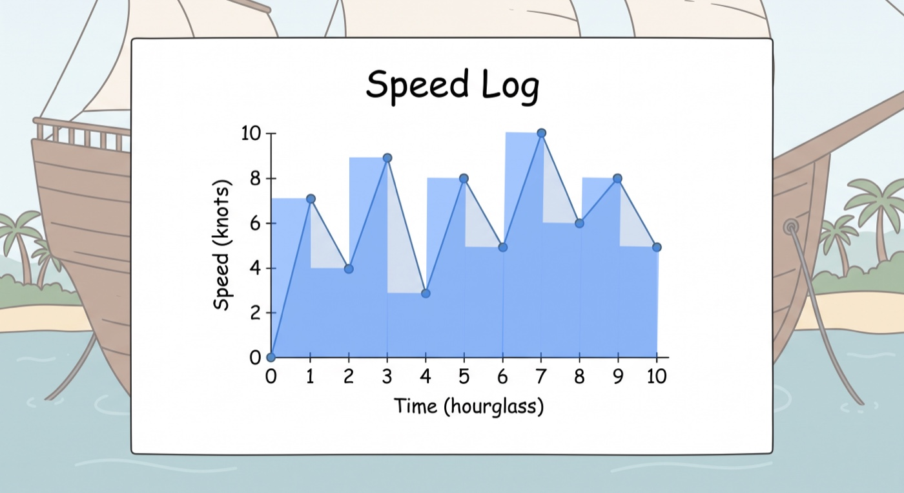
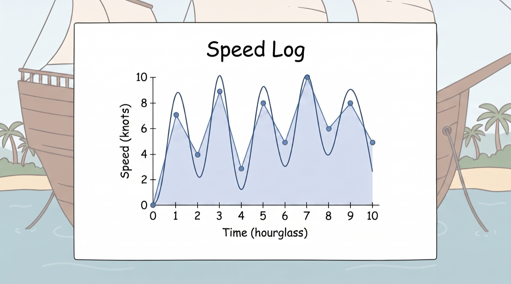
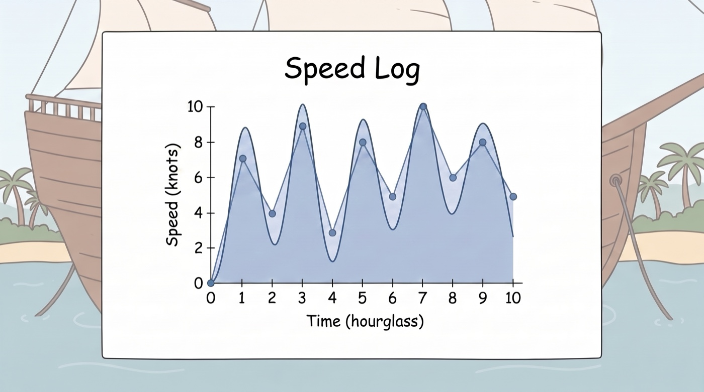
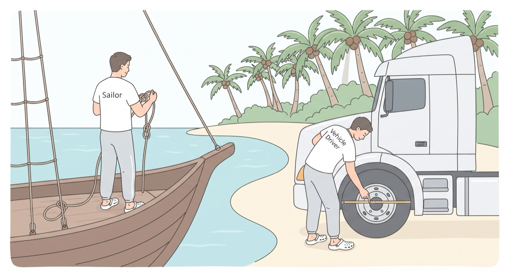
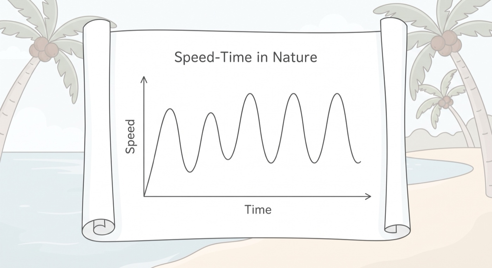
For example, the speed on the computer screen in your car updates the speed readings a few times per second. If you graph the speed-time data, you can get some pretty smooth curve.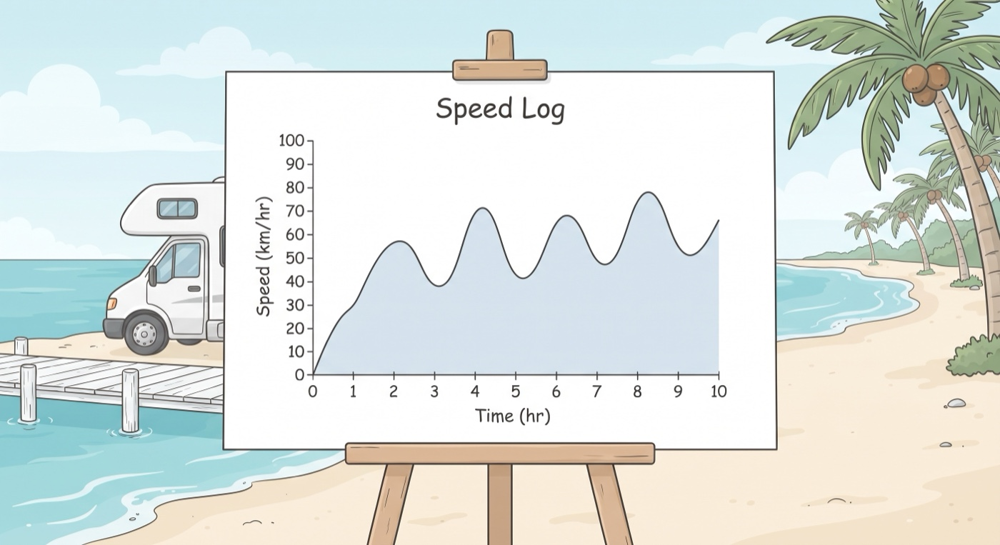
“Obviously”, speed and distance have a relationship - the area under speed-time function is the difference in distance-time function. Summing the area under a complicated speed-time curve is hard, subtracting two numbers on the distance-time curve is simple - whatever the curve may look like. Wouldn’t it be great if the captain or navigator also documented the distance-time data? Of course they did - every day they would have used the hourly speed data to estimate the total distance travelled.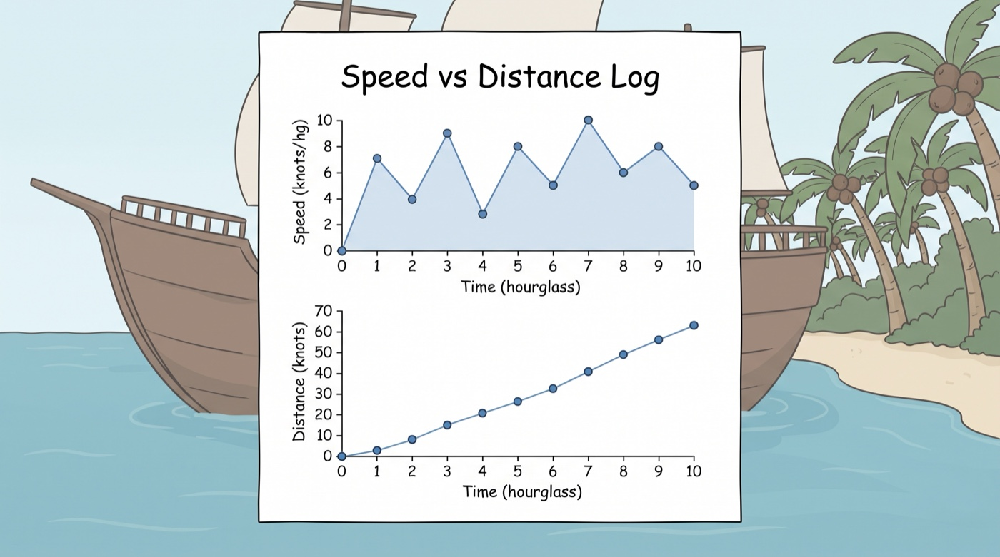
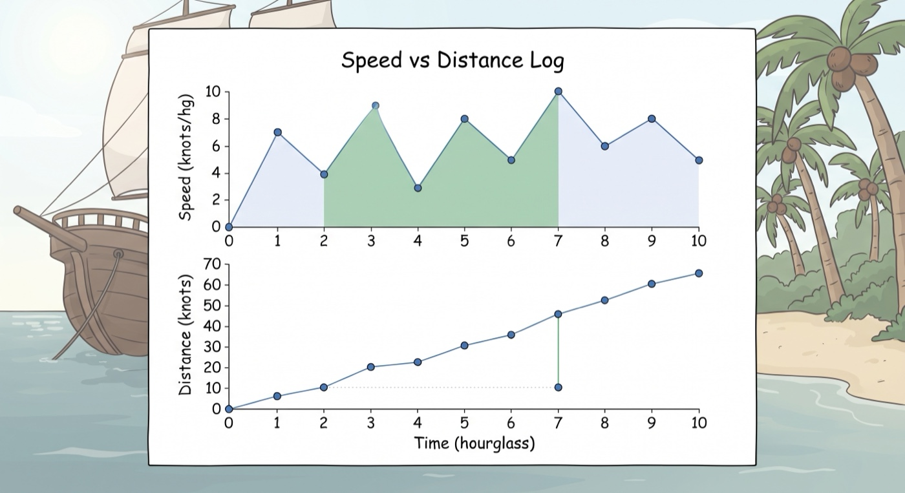
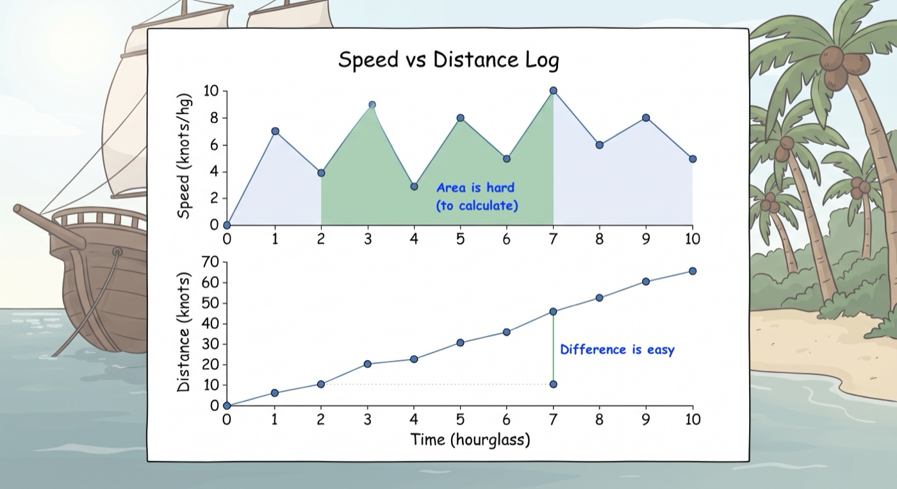
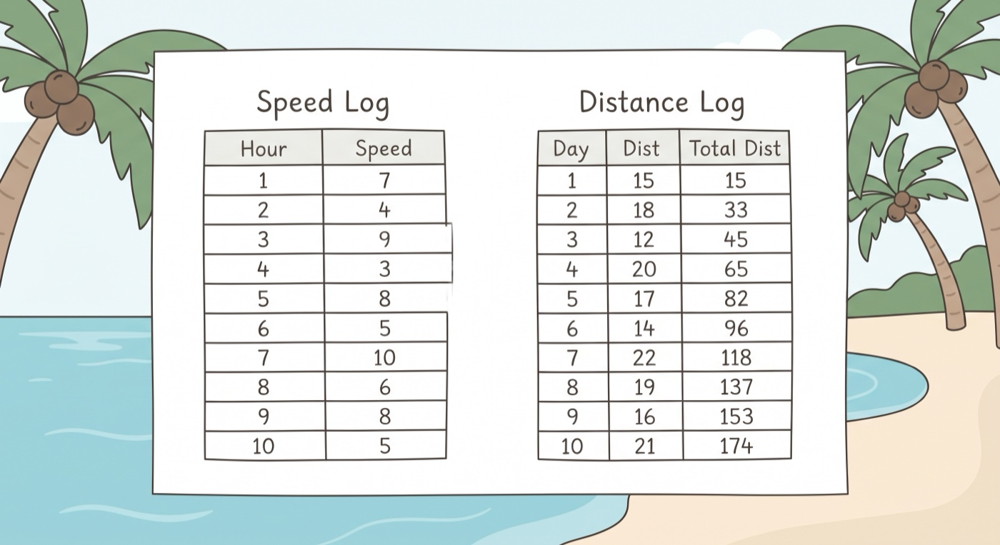
Galileo, in his balls-on-track experiment, recorded and analysed distance and time to support his theories, but he failed to go deeper to discover this universal shortcut. Like the sailors, he simply missed the “obvious” - it never occurred to the sailors that if they needed to know the distance they’d have to calculate the area under some curve, but they had both data.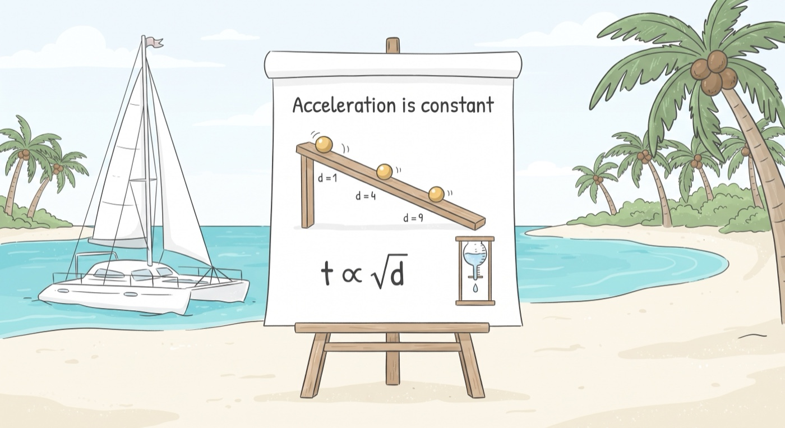
Speed, distance. Area, difference. Infinity. People had known these related concepts for thousands of years. However, to clearly identify this area-equals-difference relationship and formulate it as a mathematical tool requires timing and need. Newton identified and formulated calculus because it’s natural and essential for his study of motion. Leibniz most likely first reached that “arr-ha” moment from reading or hearing Newton’s unpublished works - as a glimpse is “sufficiently intelligible” to him. Nevertheless, his development of the techniques - with superior notation or language - is an independent effort which took many years. He definitely deserves to be equally recognized - as “co-discoverer” of the relationship, and co-inventor of the techniques.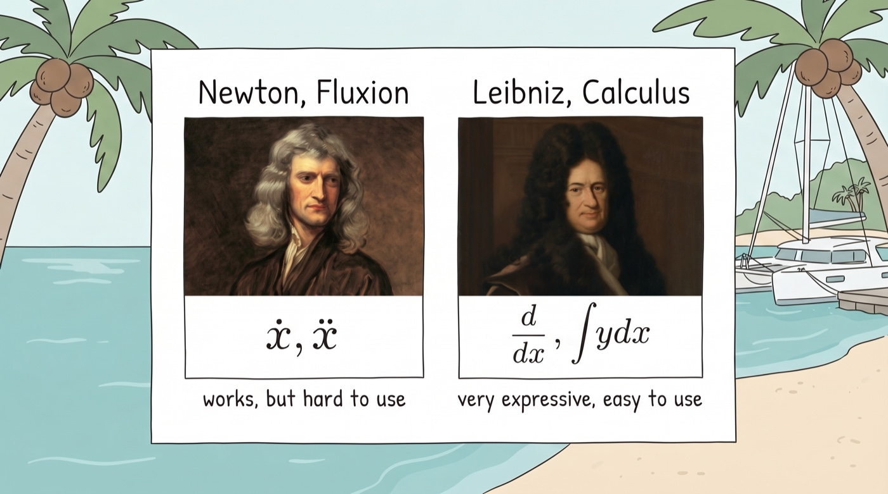
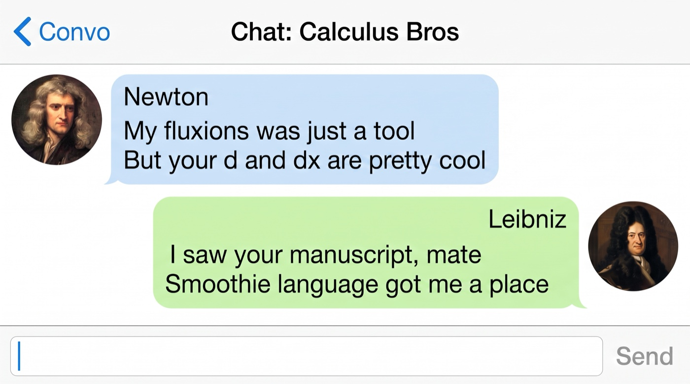